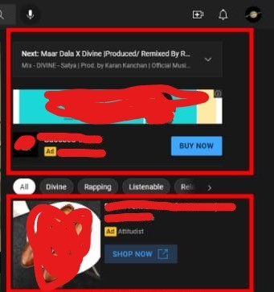

When it comes to advertisement, YouTube ads rank among the simplest and most sought-after options. You will find however companies that invest money in advertising by placing their ads on YouTube which causes an influx in sales of products. Most advertisers who want to place an ad on YouTube, get an ad designed by a graphic professional, purchase these ads and have them placed in their videos.
The reason why YouTube advertising is favored among advertisers is that it leads to a tremendous improvement in sales of the product, and as a result provides the advertisers with the return on investment made on advertisement while at the same time building the company. One of the benefits of advertising on YouTube is that, You Tubers who put the ads in their videos are also paid some amount which motivates them to create more content. Such a situation is advantageous for advertisers as well as for YouTubers.
Though, there are some restrictions attached to advertising on YouTube. Advertiser must need to Follow these guidlines. If user break any rule his account may be suspended. He must need to follow all their policies.
YouTube Ads were founded in August 2007.